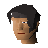

Keep Le Faye
Location at 2770, 3399 · Kingdom of Kandarin
Open on the world map → Open in knowledge graph →
NPCs
| NPC | Level | Spawns | Notable drops |
|---|---|---|---|
| 39 | 1 | ||
 Renegade Knight | 37 | 8 | |
| 27 | 3 | ||
| 19 | 1 | ||
| 1 |
Open on the world map → Open in knowledge graph →
| NPC | Level | Spawns | Notable drops |
|---|---|---|---|
| 39 | 1 | ||
 Renegade Knight | 37 | 8 | |
| 27 | 3 | ||
| 19 | 1 | ||
| 1 |